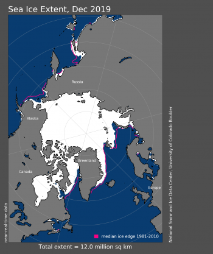
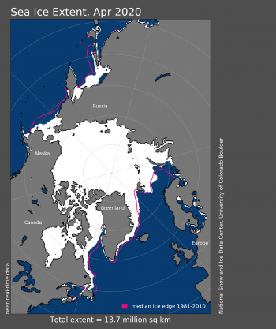

Arctic sea ice extent for April averaged 13.73 million square kilometers (5.30 million square miles). Last month, March ranked as the eleventh lowest ice extent in the satellite record, higher than it has been in the last five years. However, the pace of ice retreat increased toward the end of March and the ice extent in April retreated at rates similar to those seen in recent years. Consequently, ice extent for April 2020 ended up as fourth lowest—280,000 square kilometers (108,000 square miles) above the record low set in April 2019, and 960,000 square kilometers (371,000 square miles) below the 1981 to 2010 mean. As of April 30, the daily extent tracked at fourth lowest in the satellite data record. April sea ice extent primarily retreated in the Sea of Okhotsk and the Bering Sea, but also within the Labrador Sea, Baffin Bay, the Davis Strait, and the southern end of the East Greenland Sea. However, the ice edge remained more extensive than average for this time of year in the Barents Sea between Svalbard and Novaya Zemlya, as well as in the northern East Greenland Sea. Ocean heat transport has been a good predictor of winter sea ice variability in this general region. Over the past five years, ocean temperatures have cooled in this area because of a smaller transport of warm Atlantic water from the North Atlantic. Thus, it is not surprising that the winter ice cover in this region has slowly returned from near-average to slightly above-average conditions.
 